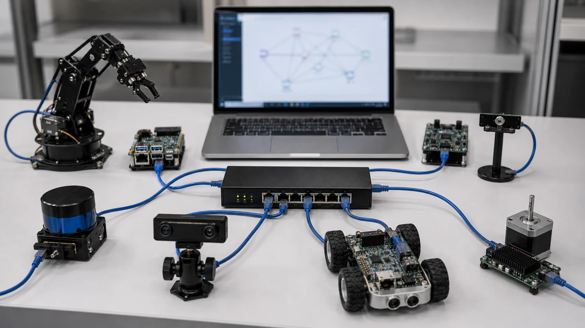
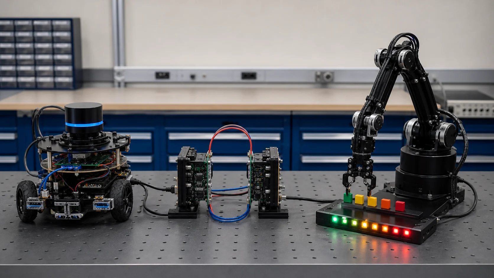

Chapter R6: ROS 2 기초
지금까지의 조각들(센서·모터·기구학·제어)을 하나의 로봇 소프트웨어로 묶는 표준 프레임워크가 ROS 2(Robot Operating System 2)입니다. 프로그램을 작은 노드로 나누고, 토픽·서비스·액션으로 서로 대화하게 만드는 방식을 배웁니다. (ROS 2는 이 학습 환경에서 실행할 수 없어, rclpy 공식 문서 기준의 정확한 코드 패턴과 "실행 환경 전제" 주석으로 다룹니다. 단, 토픽 pub/sub 개념은 순수 파이썬 미니 예제로 실행 검증합니다.)
1. ROS 2란? — 로봇 소프트웨어의 공용 언어
ROS는 이름과 달리 운영체제가 아니라 로봇 소프트웨어 미들웨어(프레임워크)입니다. 여러 프로그램을 노드로 쪼개고, 그 사이의 통신·메시지 규격·빌드·실행 도구를 표준으로 제공합니다. ROS 2는 ROS 1을 다시 설계한 버전으로, 실시간성·보안·멀티 로봇을 고려해 DDS라는 산업용 통신 미들웨어 위에 만들어졌습니다.
💡 비유로 이해하기: 레고 블록과 표준 연결부
ROS는 로봇 기능을 레고 블록(노드)으로 만들고, 블록끼리 끼우는 표준 돌기(토픽·서비스·액션)를 정해 둔 것입니다. 카메라 블록, 경로계획 블록, 모터 블록을 표준 규격으로 끼우면 동작하고, 한 블록을 더 좋은 걸로 교체해도 나머지는 그대로 씁니다. 전 세계가 같은 규격을 쓰니 남이 만든 블록(오픈소스 패키지)도 가져다 끼울 수 있습니다.

왜 배우나? 대부분의 연구·산업용 로봇이 ROS를 씁니다. 네비게이션(Nav2)·조작(MoveIt)·시뮬레이션(Gazebo) 같은 거대한 도구들이 ROS 생태계에 준비돼 있어, 바닥부터 만들지 않고 조립할 수 있습니다.
2. 노드와 토픽 — 발행/구독으로 대화
노드(node)는 한 가지 일을 하는 독립 실행 단위(프로세스)입니다 — "카메라 노드", "제어 노드"처럼요. 노드들이 가장 많이 쓰는 통신이 토픽(topic)입니다. 한 노드가 토픽에 메시지를 발행(publish)하면, 그 토픽을 구독(subscribe)하는 모든 노드가 받습니다 — 비동기·다대다·단방향 스트리밍입니다(R2의 센서 스트림, R5의 명령 흐름에 딱 맞죠).
개념을 순수 파이썬으로 먼저 실행해 봅니다(실제 ROS가 아니라, pub/sub 원리만 흉내 낸 미니 버전).
class MiniBroker:
def __init__(self):
self.subs = {} # 토픽 -> 콜백 목록
def subscribe(self, topic, cb):
self.subs.setdefault(topic, []).append(cb)
def publish(self, topic, msg):
for cb in self.subs.get(topic, []): # 한 토픽의 모든 구독자에게 전달(다대다)
cb(msg)
received = []
bus = MiniBroker()
bus.subscribe("/chatter", lambda m: received.append(f"구독자A: {m}"))
bus.subscribe("/chatter", lambda m: received.append(f"구독자B: {m}"))
for i in range(3):
bus.publish("/chatter", f"hello {i}")
print("총 전달 건수:", len(received)) # 구독자 2 × 메시지 3 = 6✅ 실행 결과 (검증됨)
총 전달 건수: 6
3. rclpy로 실제 노드 만들기 — 발행자와 구독자
이제 진짜 ROS 2 코드입니다. 파이썬 클라이언트 라이브러리 rclpy로 Node를 상속해 발행자·구독자를 만듭니다. (아래는 ROS 2 공식 패턴 — 이 학습 환경엔 ROS가 없어 실행되진 않지만, ROS 2가 깔린 곳에서 그대로 동작합니다.)
# 실행 환경: ROS 2 (예: Humble/Jazzy) 워크스페이스 · python3
# ※ 이 학습 환경엔 ROS 2가 없어 실행되지 않습니다 — 공식 패턴 학습용
import rclpy
from rclpy.node import Node
from std_msgs.msg import String # 표준 문자열 메시지 타입
class TalkerNode(Node):
def __init__(self):
super().__init__("talker") # 노드 이름
# create_publisher(메시지 타입, 토픽 이름, 큐 깊이=10)
self.pub = self.create_publisher(String, "chatter", 10)
self.create_timer(1.0, self.tick) # 1초마다 tick() 호출
self.i = 0
def tick(self):
msg = String()
msg.data = f"hello {self.i}"
self.pub.publish(msg) # 토픽에 발행
self.get_logger().info(f"발행: {msg.data}")
self.i += 1
def main():
rclpy.init() # ROS 통신 초기화
rclpy.spin(TalkerNode()) # 콜백 루프(타이머·구독)를 계속 처리
rclpy.shutdown()
if __name__ == "__main__":
main()# 실행 환경: ROS 2 워크스페이스 (학습 환경에선 실행 불가)
import rclpy
from rclpy.node import Node
from std_msgs.msg import String
class ListenerNode(Node):
def __init__(self):
super().__init__("listener")
# create_subscription(타입, 토픽, 콜백, 큐 깊이) — 같은 "chatter"를 구독
self.sub = self.create_subscription(String, "chatter", self.on_msg, 10)
def on_msg(self, msg): # 메시지가 올 때마다 자동 호출
self.get_logger().info(f"수신: {msg.data}")
def main():
rclpy.init()
rclpy.spin(ListenerNode())
rclpy.shutdown()
if __name__ == "__main__":
main()두 노드를 각각 ros2 run으로 띄우면, talker가 "chatter"에 1초마다 발행하고 listener가 받아 출력합니다. 터미널에서 ros2 topic echo /chatter로 흐르는 메시지를 직접 볼 수도 있습니다.
4. 서비스 — 요청하고 응답받기
토픽이 "계속 흘려보내는 방송"이라면, 서비스(service)는 요청 → 응답의 1:1 대화입니다(동기적). "지금 배터리 잔량 알려줘", "이 설정으로 바꿔줘"처럼 즉답이 필요한 짧은 작업에 씁니다. 클라이언트가 요청을 보내면 서버 노드가 처리하고 결과를 돌려줍니다.
💡 비유로 이해하기: 방송(토픽) vs 전화(서비스)
토픽은 라디오 방송 — 송신자는 청취자가 누군지 모르고 계속 내보냅니다. 서비스는 전화 통화 — "이거 해줘"라고 묻고 "됐어"라는 답을 받습니다. 답을 기다리는 동안은 그 결과에 의존하죠.

5. 액션 — 오래 걸리는 목표를 맡기기
액션(action)은 시간이 오래 걸리는 작업을 위한 통신입니다 — "저 좌표까지 이동해", "팔을 이 자세로 움직여"처럼요. 세 부분으로 구성됩니다: 목표(goal)를 보내고, 진행 중 피드백(feedback)을 계속 받고(예: "30% 도착"), 끝나면 결과(result)를 받습니다. 게다가 도중에 취소(cancel)할 수 있습니다.
💡 비유로 이해하기: 음식 배달 추적
액션은 배달 앱과 같습니다 — 주문(goal)을 넣고, "조리 중 → 픽업 → 배달 중"(feedback)을 실시간으로 보다가, "배달 완료"(result)를 받습니다. 마음이 바뀌면 취소도 되죠. 로봇의 "이동·조작"처럼 오래 걸리고 중간 경과가 중요한 일에 씁니다.
6. 토픽 vs 서비스 vs 액션 — 언제 무엇을
| 방식 | 형태 | 언제 | 예시 |
|---|---|---|---|
| 토픽 | 발행/구독, 비동기, 다대다, 단방향 스트림 | 계속 흐르는 데이터 | 센서값(/scan), 속도 명령(/cmd_vel) |
| 서비스 | 요청/응답, 동기, 1:1, 짧음 | 즉답이 필요한 단발 요청 | 설정 변경, 상태 질의 |
| 액션 | goal·feedback·result, 취소 가능, 장시간 | 오래 걸리고 경과가 중요 | 목적지 이동(Nav2), 팔 이동(MoveIt) |
고르는 감: "계속 흐르면 토픽, 즉답이면 서비스, 오래 걸리면 액션."
7. 패키지 · 빌드 · 실행 도구
ROS 2 코드는 패키지(package) 단위로 묶고, 워크스페이스에서 colcon으로 빌드합니다. 핵심 흐름만 익혀 두세요.
- 워크스페이스:
ws/src에 패키지 소스를 두고, 빌드하면build/·install/이 생깁니다. - colcon build: 워크스페이스 루트에서
colcon build→ 그 뒤source install/setup.bash로 환경 등록. - ros2 CLI:
ros2 run <패키지> <노드>로 실행,ros2 topic list/echo로 토픽 관찰,ros2 node list로 노드 확인. - 런치 파일: 여러 노드를 한 번에 띄우는 스크립트 —
ros2 launch <패키지> <런치파일>.
# (셸 명령 — ROS 2 환경에서 실행)
# 1) 빌드
# cd ~/ros2_ws && colcon build
# source install/setup.bash
# 2) 노드 실행 (터미널 두 개)
# ros2 run my_pkg talker
# ros2 run my_pkg listener
# 3) 토픽 관찰
# ros2 topic list
# ros2 topic echo /chatter
# 4) 여러 노드를 한 번에
# ros2 launch my_pkg bringup.launch.py8. 한 장 요약
| 개념 | 한 줄 정리 | 핵심 |
|---|---|---|
| ROS 2 | 로봇 소프트웨어 미들웨어(프레임워크) | DDS 기반, 노드 조립 |
| 노드 | 한 가지 일을 하는 실행 단위 | rclpy Node 상속 |
| 토픽 | 발행/구독, 비동기 스트림 | create_publisher / create_subscription |
| 서비스 | 요청/응답, 동기 단발 | 즉답 질의·설정 |
| 액션 | goal·feedback·result, 취소 | 이동·조작 등 장시간 |
| 도구 | 패키지·colcon·런치·CLI | colcon build, ros2 run/launch |
이제 로봇 소프트웨어를 노드로 조립하는 큰 그림을 잡았습니다. 다음 R7(ROS 2 심화 & 시뮬레이션)에서는 TF2 좌표 변환(R1!), URDF 로봇 모델, Gazebo/RViz 시뮬레이션을 다룹니다(곧 공개). 💪